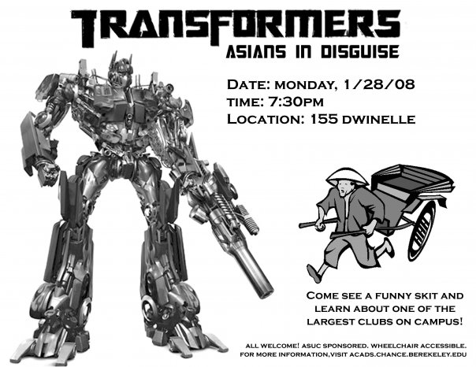

blog
Archived entries for the blog will be placed here, so that you can refer back to old entries!Everyone should check out this website and participate in the "Accidental American" story youtube contest! Watch the intro video by author Rinku Sen (below) and then create your own story and upload it to youtube.
Or, go back to visit the site in a few days and see what other people's "Accidental American" stories are!
On another note, we're still looking for staff members, and this is the last week to add the decal. If you're interested, email us, and we'll give you all the information you need.
posted by Elaine
Some late night musings...
1. Harajuku Girls.
While most people are satisfied with a few Sanrio trinkets after coming back from Japan, Gwen Stefani out-did the average tourist and returned with her own Asian entourage. They've been around for a while now but the thought still disturbs me. As Margaret Cho put it, they're practically an Asian minstrel show. Gwen thought it'd be cute to name each of the four girls Love, Angel, Music, and Baby... so remind me again, are these girls back up dancers or teacup poodles?
2. That one Asian girl on ANTM.
Every Asian American blog seems to be ecstatic about this Sheena person. I haven't checked out ANTM for quite a few seasons now so I guess I can't say too much on this one except wow, ANTM... 11 cycles now and there have only been two Asian and one South Asian contestants??? Where's the love, Tyra?
3. LPGA English Rule.
So apparently the LPGA thought that their South Korean female golfers would be better athletes if they could speak English so they were going to disqualify everyone from their tour who wasn't proficient in English. LPGA, I'm sure that there's a lot that those golfers said that's better lost in translation. Thank goodness they got around to amending that one.
4. Ping Pong Playa.
Watch the trailer, this one speaks for itself.
Well that's all for now. I promise to be less caustic after I'm well rested.
posted by Cecilia
Greetings, multitudes of hardboiled readers! I'm happy to announce that hardboiled is back in session for the fall 2008 semester, and we're looking for bright, brilliant, and all sorts of shining new staff members to help us put together the publication for the year!
If you're interested in writing, layout design, web design, or management, definitely check us out! You can find out more about hardboiled as an Asian American news publication just by browsing this website and reading the pdfs that we have archived. And a reminder, hardboiled is also a decal, meaning you can receive units for being a part of staff! So, in case you haven't been bombarded with our flyers yet...
first hardboiled decal meeting
september 3 (wednesday) @ 6pm
room 243 dwinelle
Don't miss this, or else you'll feel the regret weighing down upon your shoulders like a hundred sumo wrestlers crushing you with their gargantuan massive smelly weight. It's definitely an opportunity something you should not miss! Alright? Alright--I'll see you there.
posted by Elaine
Sorry for the delay, guys! The much anticipated 11.6 is now up and running!
posted by Elaine
An important issue that hardboiled is trying to raise awareness on is the pending 50% cuts to Berkeley's East Asian Language department. The Committee to Save Korean Studies is featured in this newest blog entry, with a post written by student Christine Hong.
UC Berkeley Students Protest Cuts to East Asian Languages
Korean Cut 66%, Chinese Cut 54%, Japanese Cut 40%
Thousands of UC students are protesting the drastic cuts made to East Asian language education at UC Berkeley. According to the projected budget figures for the next academic year, 66% of Korean language classes, 54% of Chinese language classes, and 40% of Japanese language classes will be eliminated. As a result of the cuts, more than 1500 students currently taking East Asian language classes will no longer be able to continue their studies.
The cuts will have devastating effects on Chinese and Japanese language studies, but they threaten the very existence of Korean language studies, which were in a precarious state even before the announced cuts.
The negative impact of the budget cuts extends well beyond just the Department of East Asian Languages and Cultures (EALC). The department has announced that students from other Colleges and Schools will be barred from taking East Asian language classes. As a result, hundreds of students in engineering, economics, law, business, history, and political science will be unable to pursue languages critical to their future careers.
Students at UC Berkeley are using all channels of protest, both traditional and innovative, to oppose the cuts. In addition to meeting with administrators, circulating petitions, and writing letters to campus officials and state politicians, various student groups have turned to blogs and Facebook to organize protest efforts and disseminate information. These sites and groups include savekoreanstudies@blogspot.com, "Save Korean Studies at UC Berkeley," "Object to East Asian Language and Cultures Budget Cuts" and "Support East Asian Language Education."
The cuts to East Asian language education at Berkeley are particularly shocking given UC Berkeley's role as a flagship campus on the Pacific Rim. Nearly 45% of UC Berkeley's students are of Asian descent. For many students, Berkeley is the only place where they can receive formal instruction in their heritage languages. Demand for East Asian languages among both heritage and non-heritage learners has skyrocketed over the past decade, and even before the cuts, hundreds of students were turned away or wait-listed from East Asian language classes.
For Those Interested in Helping Out, Please Check Out...
Press Conference: Next Wednesday, the Committee to Save Korean Studies will hold a press conference concerning the EACL crisis, and the conference will be open to the public.
Date: Wednesday, May 7
Time: 11 a.m.
Place: IEAS conference room (6th floor, 2223 fulton st.)
Student rally to protest the cuts to EALC: next Thursday, May 8, at noon in Sproul plaza.
Next meeting: Also, the (rapidly expanding) core committee will meet tomorrow at 1 p.m. at Cafe Med (upstairs) on Telegraph. It's across the street, roughly, from Moe's. Anyone and everyone: please join us if you can.
For more information, please visit this website. Sign the petition! Visit the press conference and student rally! Get angry. Support the cause.
posted by Elaine
The much anticipated 11.5 issue is now online! Check it out!
posted by Elaine
Although I did not attend the much anticipated torch run for the 2008 Beijing Summer School Olympics in San Francisco yesterday, turns out, I didn't miss much. Watching for a mere ten minutes off the channel seven news sufficed to illustrate the utter LACK of chaos that afternoon. Not that I was totally anticipating some sort of hair-pulling, teeth-punching, prepubescent-boy-like rioting going on in the streets of San Francisco... but I mean, c'mon, is a little too much to ask?? (Just kidding. ...Sorta.)
But really. What was clearly evident from yesterday's run was that, instead of representing a symbol of world unity, the torch run looked like a furtive fleeing from protesters towards secluded safety. Which it was, with the number of times that the route was changed, confusing the thousands of protesters who lined Embarcadero. Although I do not condemn either side for their actions (protesters or SF/Olympic officials), I am pretty disappointed by the very subdued and tense presentation that America displayed to the world. I mean, with all this media hubbub towards playing up a conflict, what DOES the Olympic torch run mean to the world anymore? Does it even have any significance, other than being an opportunity for everyone to lay out their political agendas to the world?
But my heart especially goes out to those torch runners, who had to jog between lines and lines of policeman, get stuffed into a crowded bus with other policemen, and then go through some random warehouse... with more policeman trailing. It seems like, instead of being able to relish the honor of being able to carry the Olympic torch, they had to relish in the feeling of being a criminal, complete with their own private horde of police officers to escort them and watch over their every move!
So what does that mean? Olympic torch run = covert run for your life? I just can't wait to see where it goes from here in Olympic torch runs to come.
posted by Elaine
3-25-08
A new article written by story editor Lina Peng has been added under online content! Here is an excerpt from the article, entitled "Dalai Lama Delusion."
"Anyone who follows the news (myself included) has recently been bombarded with minute by minute updates of the situation in Tibet. A quick summary of events thus far: On March 10th, some Buddhist monks demonstrated in Lhasa (the capital of Tibet). This has sparked off ongoing anti-Chinese rioting in Lhasa and surrounding provinces by ethnic Tibetans. So far, some 20 people have been killed and many more injured. Unkind words have been said by both sides with the Chinese accusing of the Dalai Lama of trying to ruin the Olympic Games, the Dalai Lama saying 'cultural genocide' has occurred. And as always, the West tip toes haphazardly in between."
Read more here!
posted by Elaine
3-20-08
We recently got a new blog here at hardboiled. But you don't know that. It's okay. It's how we like to do things: smooth and under the radar. But when things that hurt us all go undetected, we get loud and turn into OPTIMUS PRIME. We transform from smooth operator, and we get down and dirty with the issues.
America has been in economic turmoil since the 1970s. Yet from the statistics, we would have never known it. All of us have gotten richer (not equally of course) and goods have gotten much cheaper. But as our incomes increased, so did inequality, and with that economic insecurity. Almost silently, our housing and health care expenses have grown to a point where it surpasses our income. Retirement has become a luxury, and we constantly live in fear each day knowing that at any second, the jobs we went to 4 years of college to get could be shipped away to a country that could do it for cheaper. It began with calling centers, but now has moved to x-ray technicians, and even contract lawyers. Who knows what's next?
As we continue to live with these increasing insecurities, we are constantly seeking out the best deals on goods that we can find, never realizing that the more money we save, the less someone else is making. But when the roles are reversed, and we become the wage earners, we constantly complain that people are taking away from profit that was supposed to go toward your mortgage payment or your son's medical bill. As wealth becomes more concentrated to fewer people, we find ourselves shopping at Wal-Mart not because we want to, but because we need to. We all become caught up in a vicious cycle that we cannot escape from.
And so, with that said, there is no surprise that these troubling times have made me cynical about America. Although we here at hardboiled focus on Asian American issues, I want to state for the record, that this issue affects all Americans, not just Asian Americans.
Sen. Barack Obama speaks a lot about bringing "change" to American during his campaign speeches. I hope that for all of our sakes, this is what he means.
posted by Matt
3-15-08
the awesomely brilliant issue 11.4 is now online!
posted by Wendy
I figure now is a good time to start blogging for hardboiled for a variety of reasons.
- 1) I just had my wisdom teeth pulled out so there'’s not much I can do except lie around
- 2) I've watched too many episodes of Grey's Anatomy to the point that I can't stop saying, "Seriously."
- 3) Our first issue of the semester doesnÂ’t come out until March 2008 and by then people will have forgotten about this...…
I have to give my props to the Asian American Association (AAA). They do a damn good job of flyering, posting, and tabling. Even if you didn'’t want to notice them on campus, you can'’t help yourself because they are just too damn vigilant. Anyway, down to the nitty gritty. Having been at Cal since 2004, I am never surprised when AAA has their first general meeting of the semester where they make a spoof out of some movie or TV show.
But, this time, I was caught off guard: "TRANSFORMERS:– Asians in Disguise!"” Excuse me if I just donÂ't get it, especially when I see a figure of a Transformer next to a guy, who presumably is supposed to be some kind of Asian, with a rickshaw. To top it off, he'’s wearing one of those rice field straw hats.
Thanks to Facebook, IÂ've got the JPEG of that flyer for you, as I am sure a picture is worth a thousand words.

Now, what's wrong with this picture? What does "Asians in disguise" really mean? Why did they use this graphic of a man in a rickshaw to equate “Asian?” Why is my blood pressure slowly escalating?
I've heard around town that the AAA Issues Committee is actually not that bad. So I'’m wondering two things: Do I not get the joke or does the Issues Committee really suck? Considering that AAA has a past history of making spoofs on pop culture icons, I'm not too surprised. If this is supposed to be funny, I'’m missing the point and I imagine so are a lot of other people that are and arenÂ’t Asian American. People, if you want to be ironic or make a spoof of something, at least try to make it funny on paper.
Now, I have yet to see this actual skit since it's not happening until Monday. I'll let you know how that goes...…*fingers crossed*
posted by Pauline
Take the hardboiled decal this semester if you want to write articles, design the newsmagazine, or update the website for units. The first staff meeting will be next Wednesday, January 30th at 6 pm in 206 Dwinelle. Come to learn about hb and eat cookies!
posted by Wendy
Check out the new website y'all!
posted by Wendy